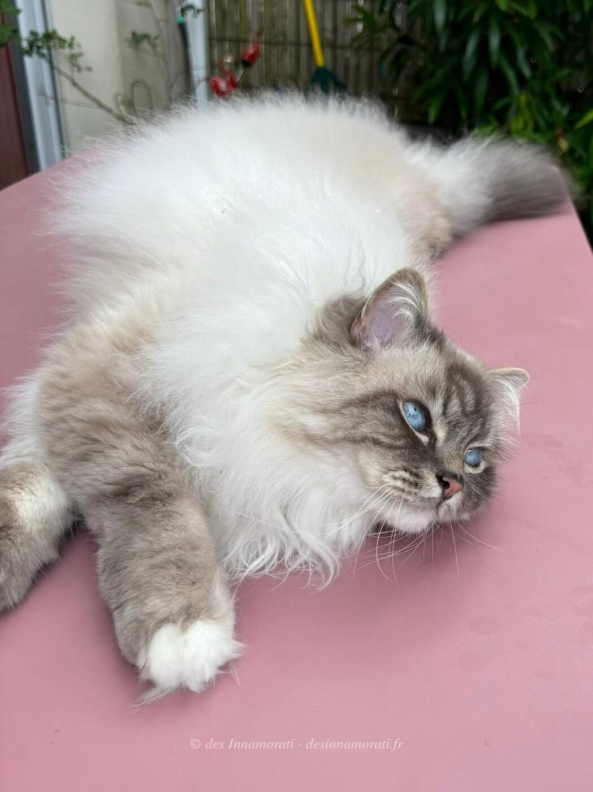

RobeMâle · Blue tabby point
StatutAdopté
Album4 photos, de août 2021 à avril 2026
Frères et sœursSidonie des Innamorati, Sofia des Innamorati, Sylvestre des Innamorati
Demi-frères et sœurspar sa mère : 2020 avec Crowned Dream Quinten, 2022 avec Crowned Dream Sugar Daddy
par son père : 2021 avec Rey, 2022 avec Poker Face, 2023 avec Simone de Beauvoir
par son père : 2021 avec Rey, 2022 avec Poker Face, 2023 avec Simone de Beauvoir


Photos réduites et marquées. Elles appartiennent à la Chatterie des Innamorati et ne peuvent pas être reprises dans une annonce.